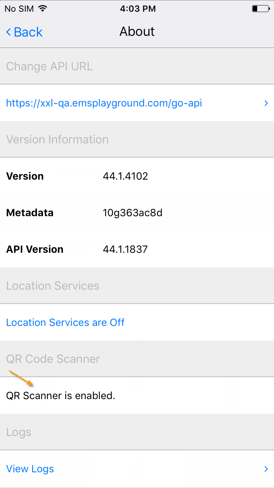
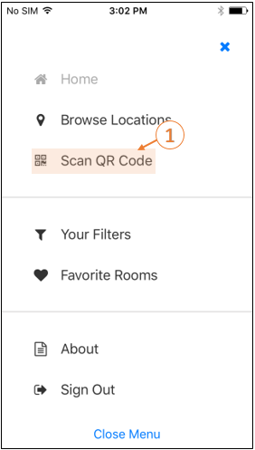

The QR Code Scanner feature of EMS Mobile App allows you to easily create a new booking or check in to a meeting you are hosting.
To create a new booking using the QR Code Scanner:

3. When you are ready to Scan a QR Code using the EMS Mobile App, navigate to the Main Menu and tap Scan QR Code.

4. Scan the workspace QR Code. A new booking is created and will appear in your Calendar. From the EMS Mobile App, you can now: